Next: 2.4 A Second Example
Up: 2 An introduction to
Previous: 2.2 Element and Group
2.3 An Example
We now consider the small example problem,
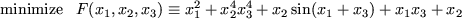
subject to the bounds
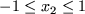 and
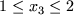.
There are a number of ways of casting this problem in the
form (2.1). Here, we consider partitioning 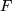
into groups
as
Notice the following:
- group 1 uses the non-trivial group
function
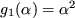. The group contains a single linear element; the element
function is 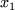.
- group 2 uses the non-trivial group function
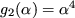. The group contains a single nonlinear element; this
element function is 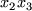. The element function has two
elemental variables,
 and
and  , say, (with 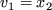 and 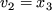) but there is no useful transformation to internal variables.
, say, (with 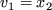 and 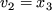) but there is no useful transformation to internal variables.
- group 3 uses the trivial group function
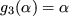. The
group contains two nonlinear elements and a single linear
element 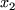. The first nonlinear element function is
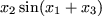. This function has three elemental variables,
 ,
,
 and
and  , say, (with
, say, (with  , 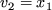 and 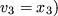, but may be expressed in terms of two internal variables
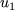 and 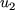, say, where
, 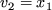 and 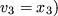, but may be expressed in terms of two internal variables
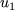 and 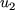, say, where  and
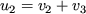. The
second nonlinear element function is
and
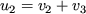. The
second nonlinear element function is  , which has two
elemental variables
, which has two
elemental variables  and
and  (with
(with  and
and  )
and is of the same type as the nonlinear element in group 2.
)
and is of the same type as the nonlinear element in group 2.
Thus we see that we can consider our objective function
to be made up of three groups;
the first and second are non-trivial
(and of different types) so we will have to provide our optimization
procedure with function and derivative
values for these at some stage. There
are three nonlinear elements,
one from group two and two more from group three.
Again this means
that we shall have to provide function and derivative
values for
these. The first and third nonlinear element
are of the same type,
while the second element is a different type. Finally one of these
element types, the second, has a useful transformation from elemental
to internal variables so this transformation will need to be set up.
Next: 2.4 A Second Example
Up: 2 An introduction to
Previous: 2.2 Element and Group